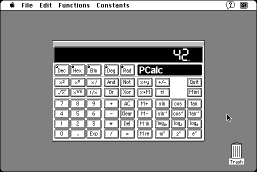

Download
pcalc-102_d.zip (info) PCalc 1.0.2 repackaged into a zipped hfs disk image and checksum file. The disk image can be mounted with Mini vMac.
pcalc-102.hqx (info) PCalc 1.0.2 in the original format.
copyright: James Thomson
mod date: Mar 25, 1993
license: freeware
official url :
PCalc
A “simulation of a programmable scientific calculator.” Requires system 7. PCalc is still being developed and sold for macOS.

If you find these downloads useful, please consider helping the Gryphel Project, which hosts them.